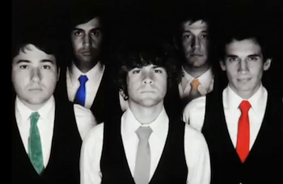

|
Роб
Кантор (желтый )- родился 26 августа 83 года в Блумфилд Хиллс, шт.
Мичиган. Учился в Старшей школе Андовер, в которой он основал группу
вместе с Заком Красманом и будущим членов Tally Hall Зубином Седги.
Играет на гитаре .
|
|
Эндрю Горовиц (зеленый ) -
родился 12 октября 83 года в Уаррэне шт. Нью Джерси. Играет на клавишах.
|
|
Зубин Седги (синий)- родился 16
сентября 84 года в западном Блумфилде, шт. Мичиган. Бассист и вокалист
группы.
|

|
Росс Федерман (серый) - родился
30 января в 85 году в Блумфилд Хиллс, шт. Мичиган. Играет на
барабане.
|

|
Джо Хоули (красный) -
родился 23 сентября в 82 году в г. Детроит, шт. Мичиган. Гитарист и
вокалист.
|